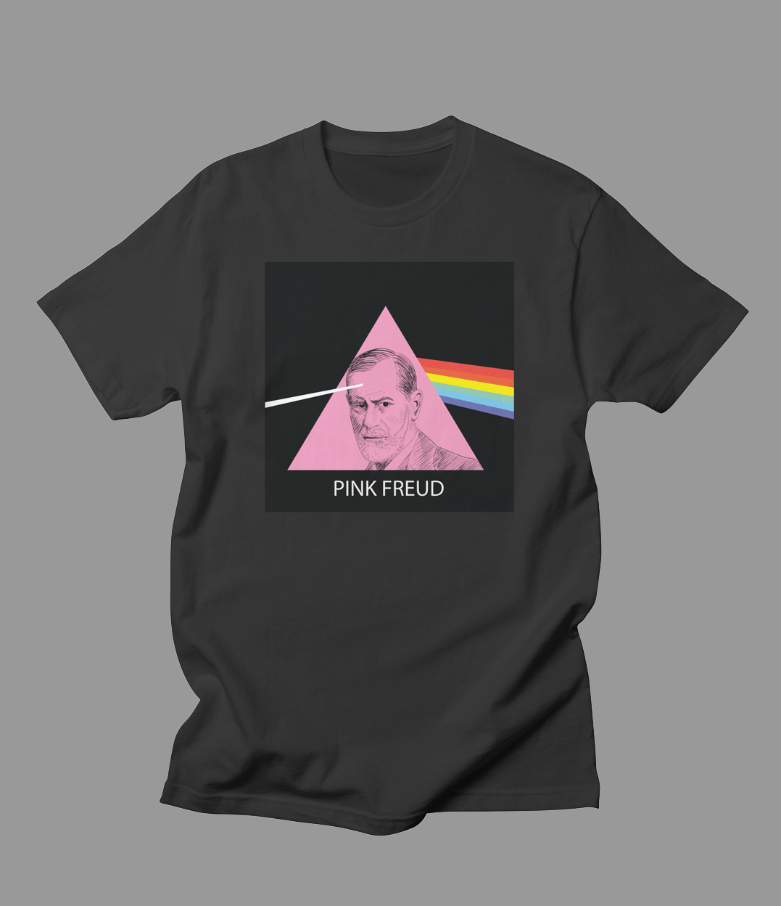

About Pink Freud
I love puns. One of my early creations is Pink Freud. It's available for sale on RedBubble and Threadless.
You can buy Pink Freud on a shirt as shown above.
Other Pink Freud Merch:
- You can also get Pink Freud stickers.
- We also have Pink Freud mugs.
- We even have Pink Freud tote bags.
About Puns
Puns are quite common, and they exist in every language (at least I think they do). I'm more interested in visual puns. According to Wikipedia, a visual pun is a pun involving a n image or images (in addition to or instead of language). Click on the links below to see some of my other punny creations: